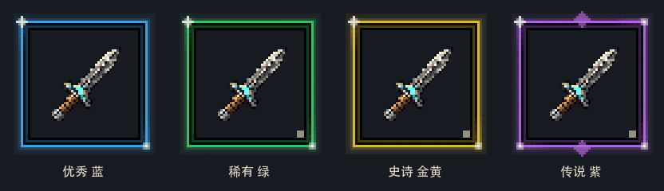
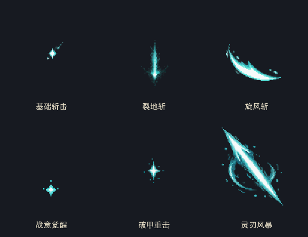

堕落纪元素材审阅
35 个方形图标 · 4 只怪物设计 · 6 组技能特效 · 4 档动态品质框。所有素材仅保存在 docs/素材，尚未接入游戏。
技能图标
装备图标
物品图标
坐骑图标
补齐怪物设计
透明设计图和单方向静态姿态；未包含完整八向角色动作包。
品质边框动画
2 秒循环、24 帧、12 FPS。蓝绿金紫框均为透明叠层；演示图叠加同一把短刃。

技能特效动画
每组 8 帧，PNG 图集 4×2。预览循环播放，实际使用建议单次播放。六技能合览统一按12 FPS展示，风暴独立预览为10 FPS。

完整资源清单 · 生成提示词与原图记录